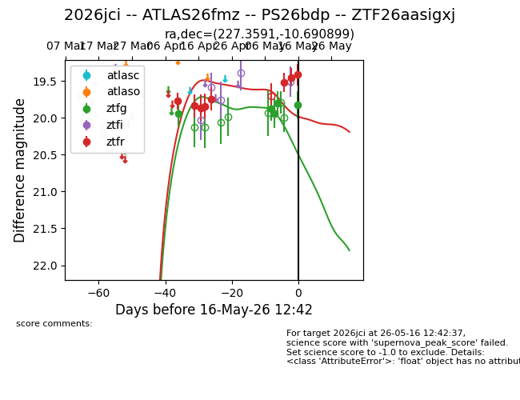
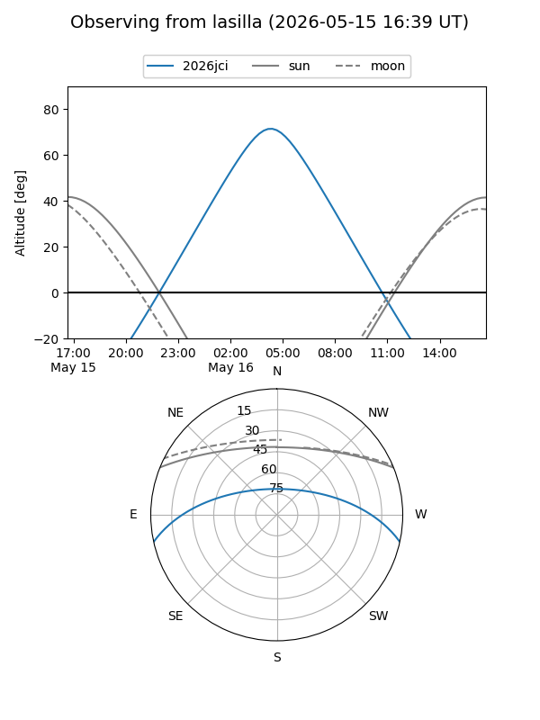
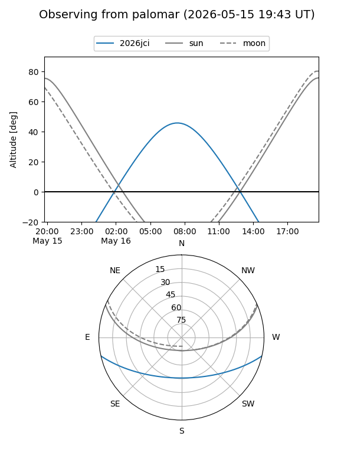
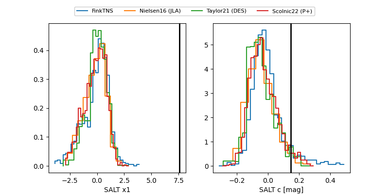

2026jci
Target 2026jci at 2026-05-16 12:44
Aliases and brokers:
FINK: link
Lasair: link
ALeRCE: link
TNS: link
YSE: link
alt names
ZTF26aasigxj (ztf,fink_ztf)
2026jci (tns,yse)
PS26bdp (panstarrs)
ATLAS26fmz (atlas)
Coordinates:
equatorial (ra, dec) = 227.3591,-10.69090
equatorial (HMS+DMS) = 15:09:26.18,-10:41:27.24
galactic (l, b) = (349.0977,+39.50495)
Flags:
Photometry:
last ztfg=19.82, ztfr=19.42
5 ztfg, 8 ztfr detections
Lightcurve

Visibility


Additional plots
